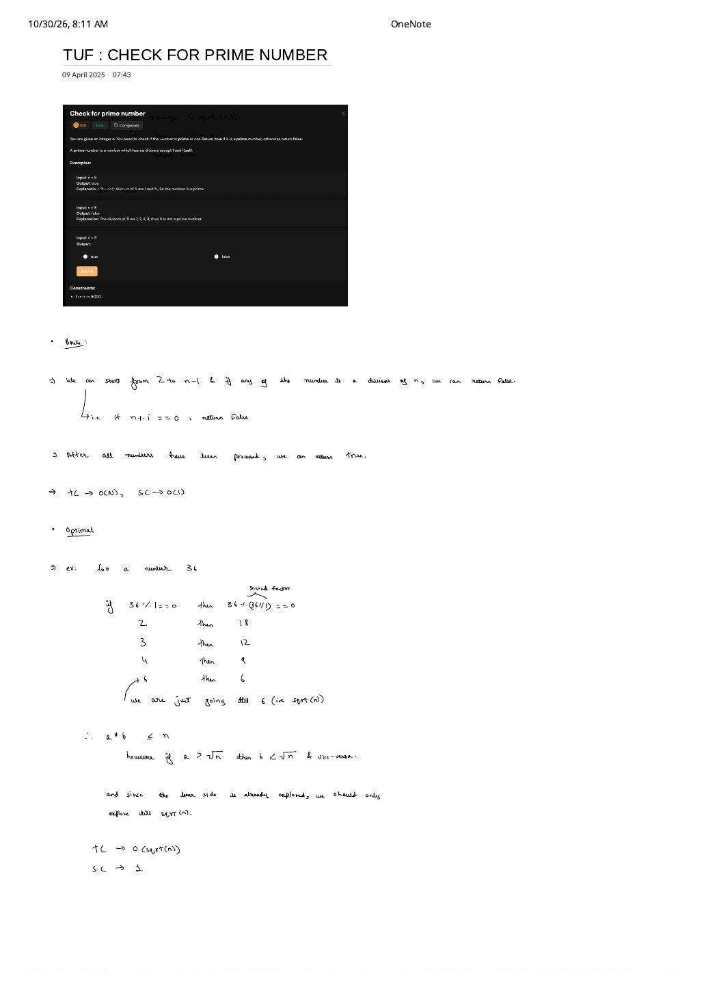

Check for Prime Number: From $\mathcal{O}(n)$ Trial Scan to $\mathcal{O}(\sqrt{n})$ Factor-Pair Symmetry
Expanded from handwritten competitive coding study note: 02_TUF_CHECK_FOR_PRIME_NUMBER.pdf
1. Problem Statement & Core Definition
Given an integer $n$, return true if $n$ is a prime number and false otherwise.
Prime vs. Composite vs. Boundary Integers
An integer $n \gt 1$ is prime if and only if its only positive divisors are $1$ and $n$ itself (exactly two distinct positive divisors). Integers $n \le 1$ ($0$, $1$, and negatives) are neither prime nor composite.
- $n = 5$ (from TUF problem header): Divisors are $\{1, 5\}$ $\implies$
true. - $n = 8$: Divisors are $\{1, 2, 4, 8\}$ $\implies$
false. - $n = 9$: Divisors are $\{1, 3, 9\}$ (square of a prime: $3 \times 3$) $\implies$
false.
2. Brute $\to$ Better $\to$ Optimal Progression
- Brute Force — $\mathcal{O}(n)$ Full Range Scan: As written in the top half of
02_TUF_CHECK_FOR_PRIME_NUMBER.pdf, handle $n \le 1 \implies \text{false}$, then iterate $i$ from $2$ to $n - 1$. Ifn % i == 0for any $i$, immediately returnfalse; once all candidates finish without dividing $n$, returntrue.- Worst-Case Bottleneck: Whenever $n$ actually is prime (e.g., $n = 10^9 + 7$), the loop executes all $n - 2 \approx 10^9$ modulo operations and TLEs!
- Better — Halving to $n / 2$ + Skipping Evens ($\mathcal{O}(n)$ Asymptotic): No proper divisor of $n$ can exceed $\lfloor n / 2 \rfloor$ (since $n / i \lt 2$ for $i \gt n / 2$), and after checking $n \bmod 2 == 0$ we can step through odd $i = 3, 5, 7, \dots$. That cuts work by $4\times$, yet still takes $2.5 \times 10^8$ divisions on $n = 10^9 + 7$.
- Optimal — $\mathcal{O}(\sqrt{n})$ Factor-Pair Turnaround ($i \times i \le n$): Stopping at $\lfloor \sqrt{n} \rfloor$ drops $10^9 + 7$ from $10^9$ checks down to $\lfloor \sqrt{10^9 + 7} \rfloor = \mathbf{31{,}622}$ checks (and handles up to $n \le 10^{14}$ in $\le 10^7$ operations!).
3. Handwritten Walkthrough: The $n = 36$ Turnaround Table
In the Optimal section of 02_TUF_CHECK_FOR_PRIME_NUMBER.pdf, listing every factor $a$ of $n = 36$ alongside its second factor $b = 36 / a$ exposes exact multiplicative reflection across $\sqrt{36} = 6$:
Bonus Contest Speedup: The $6k \pm 1$ Prime Wheel ($3\times$ Fewer Iterations)
Every integer falls into one of six residue classes modulo $6$: $6k,\; 6k+1,\; 6k+2,\; 6k+3,\; 6k+4,\; 6k+5$. Notice that $6k, 6k+2, 6k+4$ are divisible by $2$, and $6k, 6k+3$ are divisible by $3$! Therefore, every prime $p \gt 3$ is of the form $6k - 1$ or $6k + 1$ ($5, 7;\; 11, 13;\; 17, 19 \dots$). Checking n % 2 == 0 || n % 3 == 0 up front lets our loop jump by i += 6 starting at $i = 5$ and test only i and i + 2!
4. Clean C++ & Python Implementations
// Check for Prime Number — Optimal O(sqrt(n)) Time, O(1) Space
#include <iostream>
using namespace std;
// Standard clean O(sqrt(n)) loop matching the handwritten note
bool isPrimeSimple(long long n) {
if (n <= 1) return false;
for (long long i = 2; i * i <= n; ++i) {
if (n % i == 0) return false;
}
return true;
}
// Contest-grade 6k +/- 1 wheel optimization (3x faster constant factor)
bool isPrimeFast(long long n) {
if (n <= 1) return false;
if (n <= 3) return true; // 2 and 3 are prime
if (n % 2 == 0 || n % 3 == 0) return false;
for (long long i = 5; i * i <= n; i += 6) {
if (n % i == 0 || n % (i + 2) == 0) return false;
}
return true;
}import math
class Solution:
def isPrime(self, n: int) -> bool:
if n <= 1:
return False
if n <= 3:
return True
if n % 2 == 0 or n % 3 == 0:
return False
# math.isqrt(n) computes exact integer floor(sqrt(n)) with zero float drift!
limit = math.isqrt(n)
for i in range(5, limit + 1, 6):
if n % i == 0 or n % (i + 2) == 0:
return False
return True5. Complexity Proof & Key Edge Cases
- Time Complexity — $\mathcal{O}(\sqrt{n})$: The loop runs while $i \le \lfloor \sqrt{n} \rfloor$, performing $\mathcal{O}(1)$ arithmetic per iteration.
- Space Complexity — $\mathcal{O}(1)$: Uses only scalar loop variables.
- Key Edge Cases & Bugs to Avoid:
- Strict
i * i < nBug on Prime Squares ($n = 4, 9, 25, 49$): You must usei * i <= n(inclusive)! For $n = 9$ or $n = 25$, $\sqrt{n}$ is the only nontrivial divisor of $n$; writingi * i < nstops at $i = 2$ for $n = 9$ and falsely reports $9$ as prime! - 32-Bit Signed
intOverflow oni * i: When $n = 2{,}147{,}483{,}647$ ($2^{31} - 1$, prime), $\lfloor \sqrt{n} \rfloor = 46{,}340$ satisfies $46340^2 \lt 2^{31}$, but the terminating increment $i = 46{,}341$ computes $46341^2 = 2{,}147{,}488{,}281 \gt \text{INT\_MAX}$, overflowing signed 32-bitintinto a negative number and causing an infinite loop! Always typeiaslong long(or writei <= n / i). - $n \le 1$ ($n = 0, 1$, negatives): Explicitly return
falsebefore the loop, otherwise $n = 1$ skips $i = 2 \dots \sqrt{1}$ and wrongly returnstrue!
- Strict
From the Handwritten Notes
View original handwritten page — 02_TUF_CHECK_FOR_PRIME_NUMBER.pdf (Brute O(n) vs. Optimal O(√n) on n = 36)


02_TUF_CHECK_FOR_PRIME_NUMBER.pdf: Brute-force $[2, n-1]$ loop vs. optimal $\sqrt{n}$ factor-pair turnaround table on $n = 36$ showing paired divisors $(1,36), (2,18), (3,12), (4,9), (6,6)$.